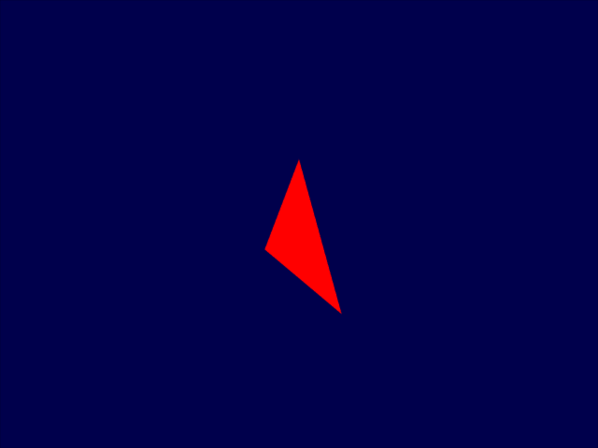
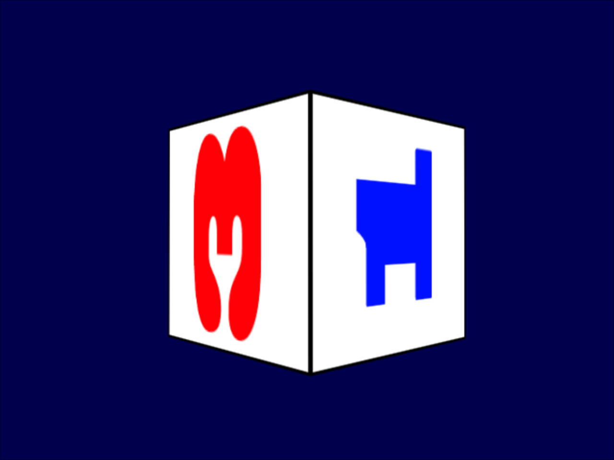
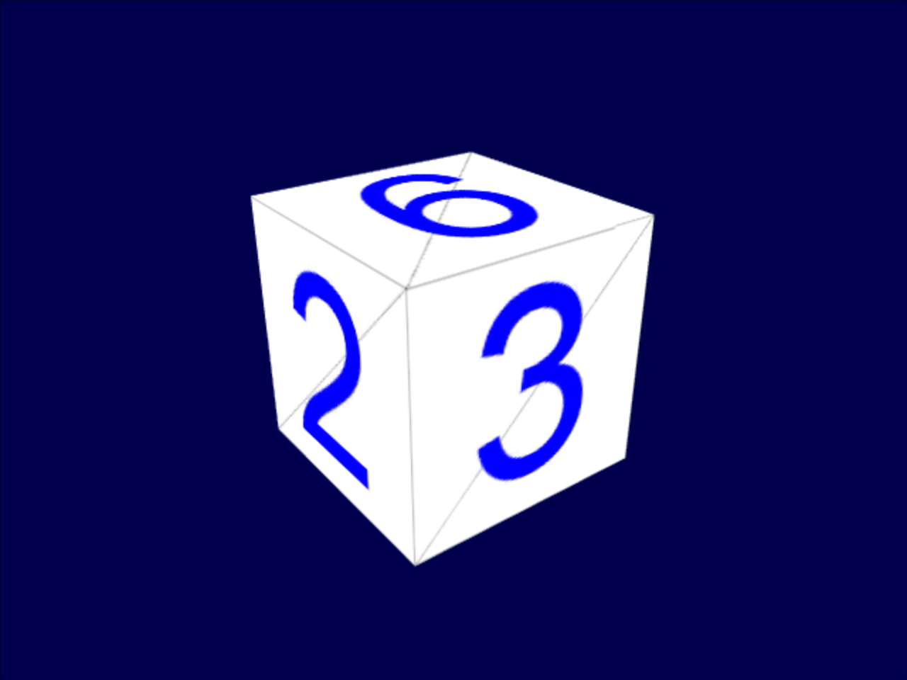
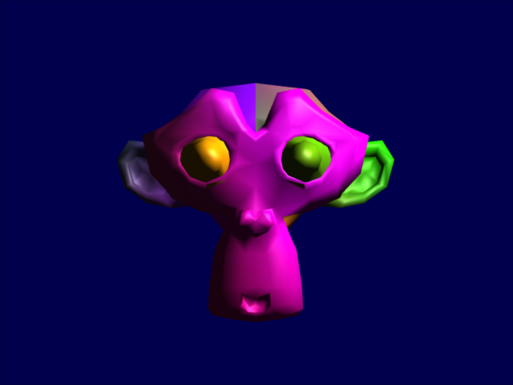

Home
Following is a set of examples showing how to use modern, cross-platform 3D graphics API provided by Kha.
It is meant to be useful if you want to program truly portable 3D graphics in Haxe, and also as a perfect starting point for learning 3D programming from scratch with a super clean API.
If you have never heard of this Haxe Kha thing, know this - it allows you to do 3D graphics in the most portable and simplistic way, while still being as close to metal as possible. You can learn more here.
We will be closely following excellent opengl-tutorial.org for theory parts, but a clean Kha implementation is built for every tutorial. Let's get started!
1.Opening a window
The reference tutorial is not really needed here since Kha handles this stuff for us perfectly. Let's see how to setup Kha and get a blank screen to show up.
To use Kha we need git and node(0.12.0+). Afterwards, open a terminal/command line (preferably in empty directory to keep things clean) and simply do 'git clone --recursive https://github.com/KTXSoftware/Empty' to get empty project.
Go to 'Sources' directory and open 'Empty.hx'. We will add a rendering function that just clears the screen.
package;
import kha.Game;
import kha.Framebuffer;
import kha.Color;
class Empty extends Game {
public function new() {
super("Empty");
}
override public function render(frame:Framebuffer) {
// A graphics object which lets us perform 3D operations
var g = frame.g4;
// Begin rendering
g.begin();
// Clear screen to black
g.clear(Color.Black);
// End rendering
g.end();
}
}
You can access complete sources here.
Now on to building our project. Open terminal/command line in project folder(where project.kha resides). With Kha you can target pretty much every platform out there, but for simplicity let's do HTML5 build. Type 'node Kha/make -t html5' to build and 'node Kha/make --server' to start local server. Open '127.0.0.1:8080' in your browser and black screen will show up!
2.The first triangle
Here comes the most exciting moment of your life - drawing a triangle! The first thing we need to do is define triangle data and a shader program.
// An array of 3 vectors representing 3 vertices to form a triangle
static var vertices:Array<Float> = [
-1.0, -1.0, 0.0, // Bottom-left
1.0, -1.0, 0.0, // Bottom-right
0.0, 1.0, 0.0 // Top
];
// Indices for our triangle, these will point to vertices above
static var indices:Array<Int> = [
0, // Bottom-left
1, // Bottom-right
2 // Top
];
var vertexBuffer:VertexBuffer;
var indexBuffer:IndexBuffer;
var program:Program;
Proceed to load shaders and link shader program in init() function.
// Define vertex structure
var structure = new VertexStructure();
structure.add("pos", VertexData.Float3);
// Save length - we only store position in vertices for now
// Eventually there will be texture coords, normals,...
var structureLength = 3;
// Load shaders - these are located in 'Sources/Shaders' directory
// and Kha includes them automatically
var fragmentShader = new FragmentShader(Loader.the.getShader("simple.frag"));
var vertexShader = new VertexShader(Loader.the.getShader("simple.vert"));
// Link program with fragment and vertex shaders we loaded
program = new Program();
program.setFragmentShader(fragmentShader);
program.setVertexShader(vertexShader);
program.link(structure);
Create vertex and index buffers from triangle data we defined.
// Create vertex buffer
vertexBuffer = new VertexBuffer(
Std.int(vertices.length / 3), // Vertex count - 3 floats per vertex
structure, // Vertex structure
Usage.StaticUsage // Vertex data will stay the same
);
// Copy vertices to vertex buffer
var vbData = vertexBuffer.lock();
for (i in 0...vbData.length) {
vbData[i] = vertices[i];
}
vertexBuffer.unlock();
// Create index buffer
indexBuffer = new IndexBuffer(
indices.length, // 3 indices for our triangle
Usage.StaticUsage // Index data will stay the same
);
// Copy indices to index buffer
var iData = indexBuffer.lock();
for (i in 0...iData.length) {
iData[i] = indices[i];
}
indexBuffer.unlock();
Moving to render() function, draw triangle on screen!
// Bind shader program we want to draw with
g.setProgram(program);
// Bind data we want to draw
g.setVertexBuffer(vertexBuffer);
g.setIndexBuffer(indexBuffer);
// Draw!
g.drawIndexedVertices();
For shaders, Kha uses GLSL syntax. Shaders are automatically converted based on target system using a tool called Krafix, meaning we do not have to worry about rewriting them. The vertex shader.
// Input vertex data, different for all executions of this shader
attribute vec3 pos;
void kore() {
// Just output position
gl_Position = vec4(pos, 1.0);
}
The fragment shader.
void kore() {
// Just output red color
gl_FragColor = vec4(1.0, 0.0, 0.0, 1.0);
}
You can access complete sources here.
Build and run project as mentioned in tutorial 1, and you will be presented with this!

3.Matrices
This is where the reference tutorial comes in handy. As it points out, this is the most important part if you are just starting out with 3D programming.
// Get a handle for our "MVP" uniform
mvpID = program.getConstantLocation("MVP");
// Projection matrix: 45° Field of View, 4:3 ratio, 0.1-100 display range
var projection = Matrix4.perspectiveProjection(45.0, 4.0 / 3.0, 0.1, 100.0);
// Camera matrix
var view = Matrix4.lookAt(new Vector3(4, 3, 3), // Position in World Space
new Vector3(0, 0, 0), // and looks at the origin
new Vector3(0, 1, 0) // Head is up
);
// Model matrix: an identity matrix (model will be at the origin)
var model = Matrix4.identity();
// Our ModelViewProjection: multiplication of our 3 matrices
// Remember, matrix multiplication is the other way around
mvp = Matrix4.identity();
mvp = mvp.multmat(projection);
mvp = mvp.multmat(view);
mvp = mvp.multmat(model);
// Send our transformation to the currently bound shader, in the "MVP" uniform
g.setMatrix(mvpID, mvp);
// Input vertex data, different for all executions of this shader
attribute vec3 pos;
// Values that stay constant for the whole mesh
uniform mat4 MVP;
void kore() {
// Output position of the vertex, in clip space : MVP * position
gl_Position = MVP * vec4(pos, 1.0);
}
{
"format": 2,
"game": {
"name": "Empty",
"width": 640,
"height": 480,
"antiAliasingSamples": 2
},
"assets": [],
"rooms": []
}
You can access complete sources here.

4.A colored cube
// An array of vertices to form a cube
static var vertices:Array<Float> = [
-1.0,-1.0,-1.0, -1.0,-1.0, 1.0, -1.0, 1.0, 1.0,
1.0, 1.0,-1.0, -1.0,-1.0,-1.0, -1.0, 1.0,-1.0,
1.0,-1.0, 1.0, -1.0,-1.0,-1.0, 1.0,-1.0,-1.0,
1.0, 1.0,-1.0, 1.0,-1.0,-1.0, -1.0,-1.0,-1.0,
-1.0,-1.0,-1.0, -1.0, 1.0, 1.0, -1.0, 1.0,-1.0,
1.0,-1.0, 1.0, -1.0,-1.0, 1.0, -1.0,-1.0,-1.0,
-1.0, 1.0, 1.0, -1.0,-1.0, 1.0, 1.0,-1.0, 1.0,
1.0, 1.0, 1.0, 1.0,-1.0,-1.0, 1.0, 1.0,-1.0,
1.0,-1.0,-1.0, 1.0, 1.0, 1.0, 1.0,-1.0, 1.0,
1.0, 1.0, 1.0, 1.0, 1.0,-1.0, -1.0, 1.0,-1.0,
1.0, 1.0, 1.0, -1.0, 1.0,-1.0, -1.0, 1.0, 1.0,
1.0, 1.0, 1.0, -1.0, 1.0, 1.0, 1.0,-1.0, 1.0
];
// Array of colors for each cube vertex
static var colors:Array<Float> = [
0.583, 0.771, 0.014, 0.609, 0.115, 0.436, 0.327, 0.483, 0.844,
0.822, 0.569, 0.201, 0.435, 0.602, 0.223, 0.310, 0.747, 0.185,
0.597, 0.770, 0.761, 0.559, 0.436, 0.730, 0.359, 0.583, 0.152,
0.483, 0.596, 0.789, 0.559, 0.861, 0.639, 0.195, 0.548, 0.859,
0.014, 0.184, 0.576, 0.771, 0.328, 0.970, 0.406, 0.615, 0.116,
0.676, 0.977, 0.133, 0.971, 0.572, 0.833, 0.140, 0.616, 0.489,
0.997, 0.513, 0.064, 0.945, 0.719, 0.592, 0.543, 0.021, 0.978,
0.279, 0.317, 0.505, 0.167, 0.620, 0.077, 0.347, 0.857, 0.137,
0.055, 0.953, 0.042, 0.714, 0.505, 0.345, 0.783, 0.290, 0.734,
0.722, 0.645, 0.174, 0.302, 0.455, 0.848, 0.225, 0.587, 0.040,
0.517, 0.713, 0.338, 0.053, 0.959, 0.120, 0.393, 0.621, 0.362,
0.673, 0.211, 0.457, 0.820, 0.883, 0.371, 0.982, 0.099, 0.879
];
// Define vertex structure
var structure = new VertexStructure();
structure.add("pos", VertexData.Float3);
structure.add("col", VertexData.Float3);
// Save length - we store position and color data
var structureLength = 6;
// Copy vertices and colors to vertex buffer
var vbData = vertexBuffer.lock();
for (i in 0...Std.int(vbData.length / structureLength)) {
vbData[i * structureLength] = vertices[i * 3];
vbData[i * structureLength + 1] = vertices[i * 3 + 1];
vbData[i * structureLength + 2] = vertices[i * 3 + 2];
vbData[i * structureLength + 3] = colors[i * 3];
vbData[i * structureLength + 4] = colors[i * 3 + 1];
vbData[i * structureLength + 5] = colors[i * 3 + 2];
}
vertexBuffer.unlock();
// A 'trick' to create indices for a non-indexed vertex data
var indices:Array = [];
for (i in 0...Std.int(vertices.length / 3)) {
indices.push(i);
}
// Create index buffer
indexBuffer = new IndexBuffer(
indices.length, // Number of indices for our cube
Usage.StaticUsage // Index data will stay the same
);
// Copy indices to index buffer
var iData = indexBuffer.lock();
for (i in 0...iData.length) {
iData[i] = indices[i];
}
indexBuffer.unlock();
// Set depth mode
g.setDepthMode(true, CompareMode.Less);
#ifdef GL_ES
precision highp float;
#endif
// Input vertex data, different for all executions of this shader
attribute vec3 pos;
attribute vec3 col;
// Output data - will be interpolated for each fragment.
varying vec3 fragmentColor;
// Values that stay constant for the whole mesh
uniform mat4 MVP;
void kore() {
// Output position of the vertex, in clip space: MVP * position
gl_Position = MVP * vec4(pos, 1.0);
// The color of each vertex will be interpolated
// to produce the color of each fragment
fragmentColor = col;
}
#ifdef GL_ES
precision mediump float;
#endif
// Interpolated values from the vertex shaders
varying vec3 fragmentColor;
void kore() {
// Output color = color specified in the vertex shader,
// interpolated between all 3 surrounding vertices
gl_FragColor = vec4(fragmentColor, 1.0);
}
You can access complete sources here.

5.A textured cube
{
"format": 2,
"game": {
"name": "Empty",
"width": 640,
"height": 480,
"antiAliasingSamples": 2
},
"assets": [
{
"file": "uvtemplate.png",
"name": "uvtemplate",
"type": "image"
}
],
"rooms": [
{
"assets": [
"uvtemplate"
],
"name": "room0",
"neighbours": [],
"parent": null
}
]
}
// Array of texture coords for each cube vertex
static var uvs:Array<Float> = [
0.000059, 0.000004, 0.000103, 0.336048, 0.335973, 0.335903,
1.000023, 0.000013, 0.667979, 0.335851, 0.999958, 0.336064,
0.667979, 0.335851, 0.336024, 0.671877, 0.667969, 0.671889,
1.000023, 0.000013, 0.668104, 0.000013, 0.667979, 0.335851,
0.000059, 0.000004, 0.335973, 0.335903, 0.336098, 0.000071,
0.667979, 0.335851, 0.335973, 0.335903, 0.336024, 0.671877,
1.000004, 0.671847, 0.999958, 0.336064, 0.667979, 0.335851,
0.668104, 0.000013, 0.335973, 0.335903, 0.667979, 0.335851,
0.335973, 0.335903, 0.668104, 0.000013, 0.336098, 0.000071,
0.000103, 0.336048, 0.000004, 0.671870, 0.336024, 0.671877,
0.000103, 0.336048, 0.336024, 0.671877, 0.335973, 0.335903,
0.667969, 0.671889, 1.000004, 0.671847, 0.667979, 0.335851
];
override public function init() {
Configuration.setScreen(new LoadingScreen());
// Load room with our texture
Loader.the.loadRoom("room0", loadingFinished);
}
// Define vertex structure
var structure = new VertexStructure();
structure.add("pos", VertexData.Float3);
structure.add("uv", VertexData.Float2);
// Save length - we store position and uv data
var structureLength = 5;
// Get a handle for texture sample
textureID = program.getTextureUnit("myTextureSampler");
// Texture
image = Loader.the.getImage("uvtemplate");
// Copy vertices and uvs to vertex buffer
var vbData = vertexBuffer.lock();
for (i in 0...Std.int(vbData.length / structureLength)) {
vbData[i * structureLength] = vertices[i * 3];
vbData[i * structureLength + 1] = vertices[i * 3 + 1];
vbData[i * structureLength + 2] = vertices[i * 3 + 2];
vbData[i * structureLength + 3] = uvs[i * 2];
vbData[i * structureLength + 4] = uvs[i * 2 + 1];
}
vertexBuffer.unlock();
Configuration.setScreen(this);
// Set texture
g.setTexture(textureID, image);
#ifdef GL_ES
precision highp float;
#endif
// Input vertex data, different for all executions of this shader
attribute vec3 pos;
attribute vec2 uv;
// Output data: will be interpolated for each fragment.
varying vec2 vUV;
// Values that stay constant for the whole mesh
uniform mat4 MVP;
void kore() {
// Output position of the vertex, in clip space: MVP * position
gl_Position = MVP * vec4(pos, 1.0);
// UV of the vertex. No special space for this one.
vUV = uv;
}
#ifdef GL_ES
precision mediump float;
#endif
// Interpolated values from the vertex shaders
varying vec2 vUV;
// Values that stay constant for the whole mesh.
uniform sampler2D myTextureSampler;
void kore() {
// Output color = color of the texture at the specified UV
gl_FragColor = texture2D(myTextureSampler, vUV);
}
You can access complete sources here.

6.Keyboard and mouse
// Add mouse and keyboard listeners
Mouse.get().notify(onMouseDown, onMouseUp, onMouseMove, null);
Keyboard.get().notify(onKeyDown, onKeyUp);
// Used to calculate delta time
lastTime = Scheduler.time();
function onMouseDown(button:Int, x:Int, y:Int) {
isMouseDown = true;
}
function onMouseUp(button:Int, x:Int, y:Int) {
isMouseDown = false;
}
function onMouseMove(x:Int, y:Int) {
mouseDeltaX = x - mouseX;
mouseDeltaY = y - mouseY;
mouseX = x;
mouseY = y;
}
function onKeyDown(key:Key, char:String) {
if (key == Key.UP) moveForward = true;
else if (key == Key.DOWN) moveBackward = true;
else if (key == Key.LEFT) strafeLeft = true;
else if (key == Key.RIGHT) strafeRight = true;
}
function onKeyUp(key:Key, char:String) {
if (key == Key.UP) moveForward = false;
else if (key == Key.DOWN) moveBackward = false;
else if (key == Key.LEFT) strafeLeft = false;
else if (key == Key.RIGHT) strafeRight = false;
}
override public function update() {
// Compute time difference between current and last frame
var deltaTime = Scheduler.time() - lastTime;
lastTime = Scheduler.time();
// Compute new orientation
if (isMouseDown) {
horizontalAngle += mouseSpeed * mouseDeltaX * -1;
verticalAngle += mouseSpeed * mouseDeltaY * -1;
}
// Direction : Spherical coordinates to Cartesian coordinates conversion
var direction = new Vector3(
Math.cos(verticalAngle) * Math.sin(horizontalAngle),
Math.sin(verticalAngle),
Math.cos(verticalAngle) * Math.cos(horizontalAngle)
);
// Right vector
var right = new Vector3(
Math.sin(horizontalAngle - 3.14 / 2.0),
0,
Math.cos(horizontalAngle - 3.14 / 2.0)
);
// Up vector
var up = right.cross(direction);
// Movement
if (moveForward) {
var v = direction.mult(deltaTime * speed);
position = position.add(v);
}
if (moveBackward) {
var v = direction.mult(deltaTime * speed * -1);
position = position.add(v);
}
if (strafeRight) {
var v = right.mult(deltaTime * speed);
position = position.add(v);
}
if (strafeLeft) {
var v = right.mult(deltaTime * speed * -1);
position = position.add(v);
}
// Look vector
var look = position.add(direction);
// Camera matrix
view = Matrix4.lookAt(position, // Camera is here
look, // and looks here : at the same position, plus "direction"
up // Head is up (set to (0, -1, 0) to look upside-down)
);
// Update model-view-projection matrix
mvp = Matrix4.identity();
mvp = mvp.multmat(projection);
mvp = mvp.multmat(view);
mvp = mvp.multmat(model);
mouseDeltaX = 0;
mouseDeltaY = 0;
}
// Set culling
g.setCullMode(CullMode.CounterClockwise);
You can access complete sources here.

7.Model loading
{
"format": 2,
"game": {
"name": "Empty",
"width": 640,
"height": 480,
"antiAliasingSamples": 2
},
"assets": [
{
"file": "uvmap.png",
"name": "uvmap",
"type": "image"
},
{
"file": "cube.obj",
"name": "cube",
"type": "blob"
}
],
"rooms": [
{
"assets": [
"uvmap",
"cube"
],
"name": "room0",
"neighbours": [],
"parent": null
}
]
}
// Define vertex structure
var structure = new VertexStructure();
structure.add("pos", VertexData.Float3);
structure.add("uv", VertexData.Float2);
structure.add("nor", VertexData.Float3);
// Save length - we store position, uv and normal data
var structureLength = 8;
// Parse .obj file
var obj = new ObjLoader(Loader.the.getBlob("cube").toString());
var data = obj.data;
var indices = obj.indices;
// Create vertex buffer
vertexBuffer = new VertexBuffer(
Std.int(data.length / structureLength), // Vertex count
structure, // Vertex structure
Usage.StaticUsage // Vertex data will stay the same
);
// Copy data to vertex buffer
var vbData = vertexBuffer.lock();
for (i in 0...vbData.length) {
vbData[i] = data[i];
}
vertexBuffer.unlock();
// Create index buffer
indexBuffer = new IndexBuffer(
indices.length, // Number of indices for our cube
Usage.StaticUsage // Index data will stay the same
);
// Copy indices to index buffer
var iData = indexBuffer.lock();
for (i in 0...iData.length) {
iData[i] = indices[i];
}
indexBuffer.unlock();
You can access complete sources here.

8.Basic shading
viewMatrixID = program.getConstantLocation("V");
modelMatrixID = program.getConstantLocation("M");
lightID = program.getConstantLocation("lightPos");
var obj = new ObjLoader(Loader.the.getBlob("suzanne").toString());
g.setMatrix(modelMatrixID, model);
g.setMatrix(viewMatrixID, view);
// Set light position to (4, 4, 4)
g.setFloat3(lightID, 4, 4, 4);
#ifdef GL_ES
precision highp float;
#endif
// Input vertex data, different for all executions of this shader
attribute vec3 pos;
attribute vec2 uv;
attribute vec3 nor;
// Output data: will be interpolated for each fragment
varying vec2 vUV;
varying vec3 positionWorldspace;
varying vec3 normalCameraspace;
varying vec3 eyeDirectionCameraspace;
varying vec3 lightDirectionCameraspace;
// Values that stay constant for the whole mesh
uniform mat4 MVP;
uniform mat4 V;
uniform mat4 M;
uniform vec3 lightPos;
void kore() {
// Output position of the vertex, in clip space: MVP * position
gl_Position = MVP * vec4(pos, 1.0);
// Position of the vertex, in worldspace : M * position
positionWorldspace = (M * vec4(pos, 1.0)).xyz;
// Vector that goes from the vertex to the camera, in camera space.
// In camera space, the camera is at the origin (0,0,0).
vec3 vertexPositionCameraspace = (V * M * vec4(pos, 1.0)).xyz;
eyeDirectionCameraspace = vec3(0.0, 0.0, 0.0) - vertexPositionCameraspace;
// Vector that goes from the vertex to the light, in camera space. M is ommited because it's identity.
vec3 lightPositionCameraspace = (V * vec4(lightPos, 1.0)).xyz;
lightDirectionCameraspace = lightPositionCameraspace + eyeDirectionCameraspace;
// Normal of the the vertex, in camera space
normalCameraspace = (V * M * vec4(nor, 0.0)).xyz; // Only correct if modelMatrix does not scale the model! Use its inverse transpose if not.
// UV of the vertex. No special space for this one.
vUV = uv;
}
#ifdef GL_ES
precision mediump float;
#endif
// Interpolated values from the vertex shaders
varying vec2 vUV;
varying vec3 positionWorldspace;
varying vec3 normalCameraspace;
varying vec3 eyeDirectionCameraspace;
varying vec3 lightDirectionCameraspace;
// Values that stay constant for the whole mesh.
uniform sampler2D myTextureSampler;
uniform vec3 lightPos;
void kore() {
// Light emission properties
// You probably want to put them as uniforms
vec3 lightColor = vec3(1.0,1.0,1.0);
float lightPower = 50.0;
// Material properties
vec3 materialDiffuseColor = texture2D(myTextureSampler, vUV).rgb;
vec3 materialAmbientColor = vec3(0.1, 0.1, 0.1) * materialDiffuseColor;
vec3 materialSpecularColor = vec3(0.3, 0.3, 0.3);
// Distance to the light
float distance = length(lightPos - positionWorldspace);
// Normal of the computed fragment, in camera space
vec3 n = normalize(normalCameraspace);
// Direction of the light (from the fragment to the light)
vec3 l = normalize(lightDirectionCameraspace);
// Cosine of the angle between the normal and the light direction,
// clamped above 0
// - light is at the vertical of the triangle -> 1
// - light is perpendicular to the triangle -> 0
// - light is behind the triangle -> 0
float cosTheta = clamp(dot(n, l), 0.0, 1.0);
// Eye vector (towards the camera)
vec3 E = normalize(eyeDirectionCameraspace);
// Direction in which the triangle reflects the light
vec3 R = (-l) - 2.0 * dot(n, (-l)) * n;
//vec3 R = reflect(-l,n); // TODO: waiting for krafix fix
// Cosine of the angle between the Eye vector and the Reflect vector,
// clamped to 0
// - Looking into the reflection - 1
// - Looking elsewhere - < 1
float cosAlpha = clamp(dot(E, R), 0.0, 1.0);
gl_FragColor = vec4(vec3(
// Ambient: simulates indirect lighting
materialAmbientColor +
// Diffuse: "color" of the object
materialDiffuseColor * lightColor * lightPower * cosTheta / (distance * distance) +
// Specular: reflective highlight, like a mirror
materialSpecularColor * lightColor * lightPower * pow(cosAlpha, 5.0) / (distance * distance)
), 1.0);
}
You can access complete sources here.
